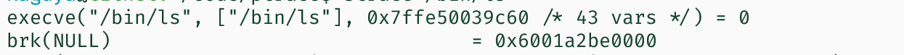
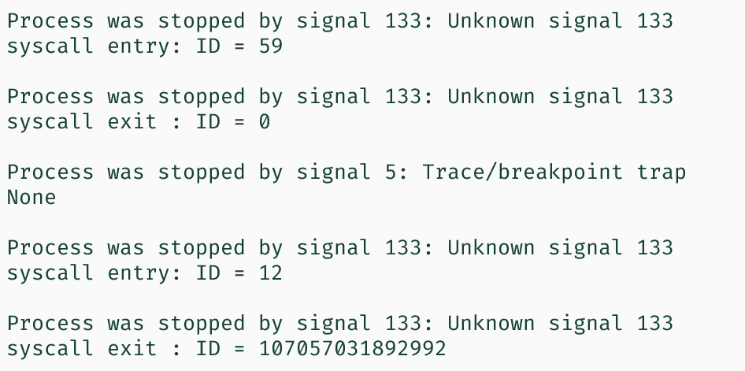
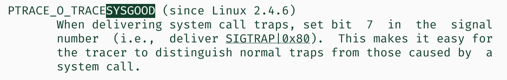
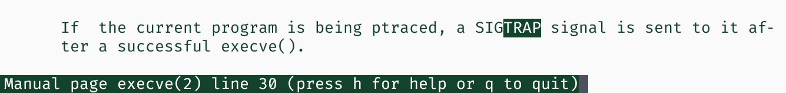
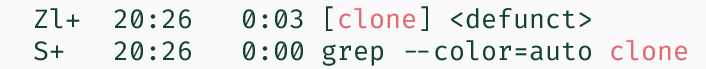

工作随记
Comment先来做一个数独吧。然后就做了一小时。
主要就来写一些关于 ptrace 的发现吧。从这样一个小程序说起
1 | int main() { |
注意 line 11 的注释。在注释掉这一行前，syscall_info 是可以获得相关信息的。但是注释之后，每次都只能获得到 NONE。Man ptrace(2) 理由是，”In case of system call entry or exit stop…limited to type ..NONE unless ..TRACESYSGOOD option is set”。
我们现在来控制它走几步。

依此就是 execve()， NONE， 还有 brk()。
根据 strace，/bin/ls 的第一个调用就是 brk()，挺合理的。

这里甚至看到 execve() 有返回值（？？）
那么，其实想要揪出这个 NONE 到底是什么。
根本不懂。
我是呆逼。
意思是 SIGTRAP|0x80 是一般的正常的系统调用 invoke/return 产生的。而那个 5 应该是有问题的。
逆天。
这个特性挺能藏。
接下来，我们将会来观察，在 clone 发生的时候，ptrace 要怎么跟踪
首先随便讲一下线程这个东西。
作为 clone() 创建的 linux 原生线程呢，刚创建完后被控制的第一下，就是执行线程入口函数的第一个系统调用。这为我们简化了很多。但是在函数执行完之后，线程就会悄悄地死掉，然后什么也不告诉主线程。
事实上，thread 自行退出是通过 SYS_exit 系统调用（60号）。它做的仅仅是终结这个执行流；那么就少了一个可以调度到 CPU 上被执行的东西。不太明白这个系统调用对于资源的释放有没有，似乎没有，毕竟 clone() 之前就要准备好线程要使用的资源了，应该是调用者释放。
在任意一个线程，甚至是主线程，调用
1 | syscall(SYS_exit, 0); |
都可以使当前执行流停止，并且其他的线程继续运行，整个进程基本上没啥大问题。资源应该都是进程层级的东西。
如果子线程退出，你会得到：
1 | -process |
如果主线程退出，会得到：
1 | -process-{process} |
是的，主线程死了，但是主进程还活着。
当然其实 ps -aux 还是可以看到它的状态的。非常地合理。
作为 tracer，在看到线程 syscall(60) 的时候，只要在 entry 处 detach 一下就好了。当然如果要砍掉一个线程，那只要罚它做一个 SYS_exit 然后 detach。